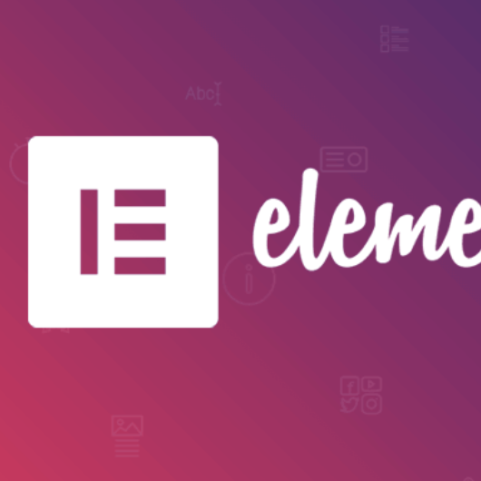

 J'ai effectué un stage dans le domaine du Développement Web dans l'entreprise "Agence Revolutions" dans le 14ème arrondissement de Paris pendant 8 semaines
Deux projets ont été réalisés durant ce stage, le deuxième à été pour l'entreprise "Bois Reduc". Mon objectif à été de réaliser des widgets afin que l’entreprise puisse les utiliser pour créer leur propre site internet par la suite. Pour l'utilsier l'entreprise avait juste a glisser le widget choisi à l'endroit voulu. Pour ce travail, nous devions utiliser dans WordPresse le plug-in « Elementor » (Elementor simplifie à l'extrême la conception et la maintenance des pages WordPress sous forme de processus visuel drag'n drop. On appelle cela un page builder.) afin de créer ses widgets.
novembre 2021 - décembre 2021
Voici la liste de widgets qu'on a eu a faire :
(les blocs de couleur sont ceux que j'ai effectué)